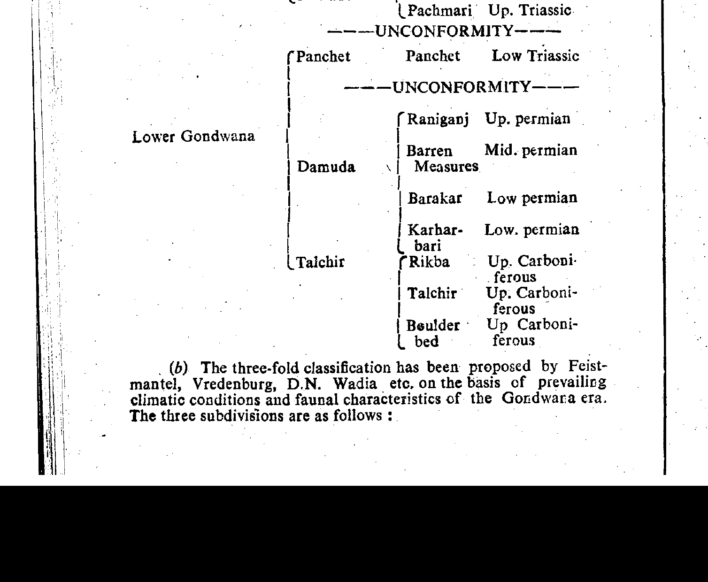
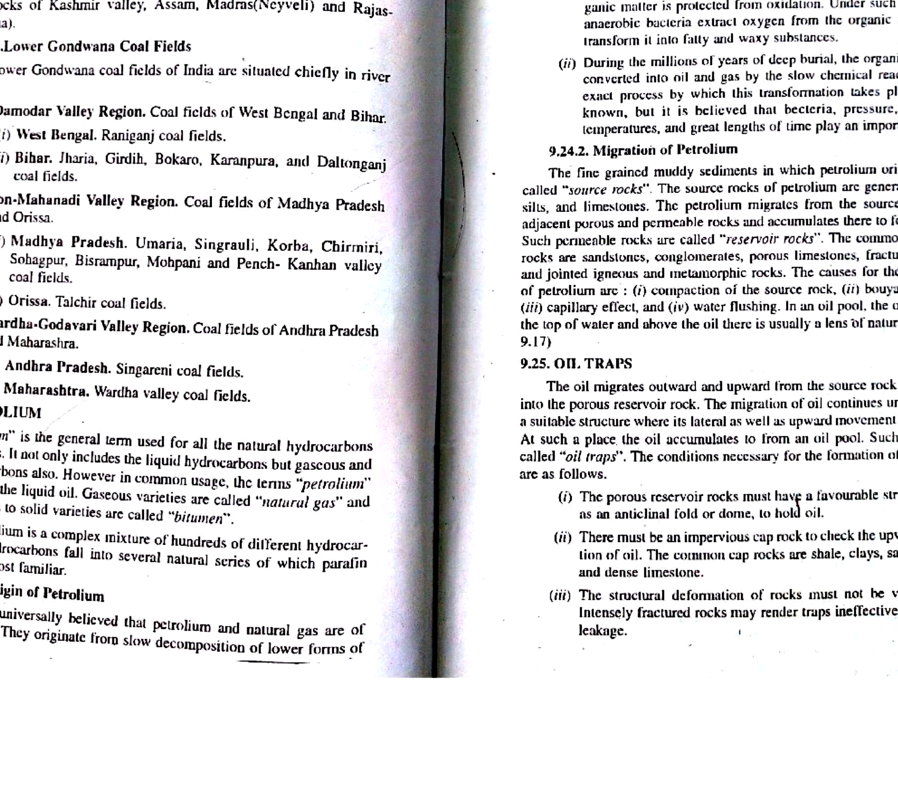

The Talcher Coalfield, situated in the Brahmani-Mahanadi valley in the Angul and Sambalpur districts of Odisha, represents the largest single repository of thermal power-grade bituminous coal in India (holding over 50 billion tonnes of geological reserves). In 1982, Geological Survey of India Director C.S. Raja Rao synthesized the definitive stratigraphic architecture of the basin:
Followed conformably by the main Barakar Formation (Early Permian Artinskian).

The two Early Permian formations established in Raja Rao's classification exhibit distinct sedimentological signatures:

| Broad Division (Raja Rao 1982) | Formation Name | Approx. Thickness | Dominant Lithologies & Coal Status |
|---|---|---|---|
| Late Permian to Triassic | Kamthi (Mahadeva) Formation | $150-250\text{ m}$ | Red ferruginous sandstones, quartz pebble conglomerates. Barren of coal. |
| Barren Measures Formation | $100-200\text{ m}$ | Dark carbonaceous shales, greenish siltstones. Barren of coal. | |
| Early Permian (Target Division) | Barakar Formation | $300-500\text{ m}$ | Feldspathic sandstones, grey shales, thick composite coal seams (Seams II to VIII). Prolific coal. |
| Karharbari Formation | $50-100\text{ m}$ | Sub-arkosic grits, dirty sandstones, Seam I. Basal coal-bearing unit. | |
| Talchir Formation | $60-150\text{ m}$ | Boulder bed (tillite), olive green needle shales, varvites. Glaciogenic, devoid of coal. |
Detailed Stratigraphic Forensic Analysis:
Detailed Refutation:
Detailed Refutation:
Detailed Refutation:
| Formation | Primary Coal Seams | Coal Quality / Rank | Maceral Composition |
|---|---|---|---|
| Barakar Formation (Main Measures) | Seam II through Seam VIII (Composite seams up to $40\text{ m}$ thick). | Non-coking thermal power coal; high moisture ($6-10\%$), high ash ($30-45\%$). | Rich in vitrinite and inertinite bands. |
| Karharbari Formation (Basal Coal) | Seam I (Split into Top, Middle, Bottom sections; $3-8\text{ m}$). | Semi-coking to medium-coking potential; lower ash ($18-24\%$). | Dominated by inertinite macerals (fusinite, semifusinite); dull durain coal. |
| Talchir Formation (Basal Glacial) | Completely Barren (Zero coal seams). | N/A (Glacial tillites and lacustrine shales). | No coal macerals; contains reworked cold-climate monosaccate spores. |
In an opencast coal block of the Talcher Coalfield, a composite Barakar coal seam has thickness $T_{\text{coal}} = 25\text{ m}$. Overlying overburden rock has thickness $T_{\text{ob}} = 75\text{ m}$. Calculate the Stripping Ratio (in $\text{m}^3/\text{tonne}$) assuming coal density $\rho_{\text{coal}} = 1.4\text{ tonnes/m}^3$.
Step-by-Step Solution:
For unit horizontal area ($1\text{ m}^2$):
$$\text{Volume of Overburden} = 1\text{ m}^2 \times 75\text{ m} = 75\text{ m}^3$$ $$\text{Mass of Coal} = 1\text{ m}^2 \times 25\text{ m} \times 1.4\text{ tonnes/m}^3 = 35\text{ tonnes}$$ $$\text{Stripping Ratio} = \frac{75\text{ m}^3}{35\text{ tonnes}} \approx 2.14\text{ m}^3/\text{tonne}$$Final Answer: The stripping ratio is $2.14\text{ m}^3/\text{tonne}$, indicating an exceptionally favorable opencast mining project.
What petrographic and maceral characteristic distinguishes Karharbari coals from Barakar coals in the Talcher basin?
Step-by-Step Solution:
Karharbari coals (Seam I) are dull, hard, compact coals dominated by the inertinite maceral group (fusinite, inertodetrinite, semifusinite $>50\%$) formed by oxidative subaerial peat exposure and wildfires. In contrast, Barakar coals (Seams II-VIII) are banded, brighter coals containing higher proportions of the vitrinite maceral group ($40-60\%$) formed under permanently waterlogged, reducing anoxic swamp conditions.
State the structural tectonic boundaries of the Talcher Coalfield within Odisha.
Step-by-Step Solution:
The Talcher Coalfield forms the southeastern terminus of the Mahanadi-Brahmani Master Graben. It is bounded on the north by the North Fault scarp against Rengali Province gneisses, on the south and west by Eastern Ghats charnockites and khondalites, and plunges gently towards the west-northwest into the adjacent Ib River Coalfield.
According to India's Ministry of Coal GCV pricing banding, calculate the GCV of a Talcher coal sample containing Moisture $M = 7.0\%$ and Ash $A = 38.0\%$ using the empirical formula: $\text{GCV (kcal/kg)} = 8550 - 150(M + A)$.
Step-by-Step Solution:
$$M + A = 7.0 + 38.0 = 45.0\%$$ $$\text{GCV} = 8550 - 150(45.0) = 8550 - 6750 = 1800\text{ kcal/kg}$$Final Answer: $\text{GCV} = 1800\text{ kcal/kg}$ (corresponding to Grade G16 power utility thermal coal).
Which pollen genus is the definitive biostratigraphic marker for the Karharbari Formation in Talcher?
Step-by-Step Solution:
The radial monosaccate genus Crucisaccites monoletus and Parasaccites korbaensis, accompanied by the appearance of striate disaccate pollen (Faunipollenites), marking the Sakmarian stage of the early Cisuralian.
How do sedimentary dip angles vary from the southern to the northern boundary of the Talcher Coalfield?
Step-by-Step Solution:
Along the southern boundary, Gondwana strata rest unconformably upon Precambrian basement with gentle northern dips of $5^\circ-10^\circ$. Moving northward toward the master boundary fault, dips increase sharply to $25^\circ-45^\circ$, forming an asymmetric half-graben tilted towards the northern boundary fault.
What hydrogeological hazard is associated with the multi-aquifer system in the Barakar sandstones of Talcher?
Step-by-Step Solution:
The thick, porous Barakar sandstone layers sandwiching coal seams form prolific confined and semi-confined artesian aquifers. Heavy seasonal monsoons recharge these sandstones, generating high artesian pore pressures capable of bursting pit bottoms or causing sudden flooding of opencast sumps.
What characteristic gymnosperm fossil plant assemblage appears in the Kamthi beds overlying the coal measures in Talcher?
Step-by-Step Solution:
The Kamthi beds contain late Permian to early Triassic floral elements, notably Schizoneura gondwanensis, Glossopteris conspicua, and Dicroidium fronds, signifying a climatic drying trend with the onset of seasonal arid conditions.